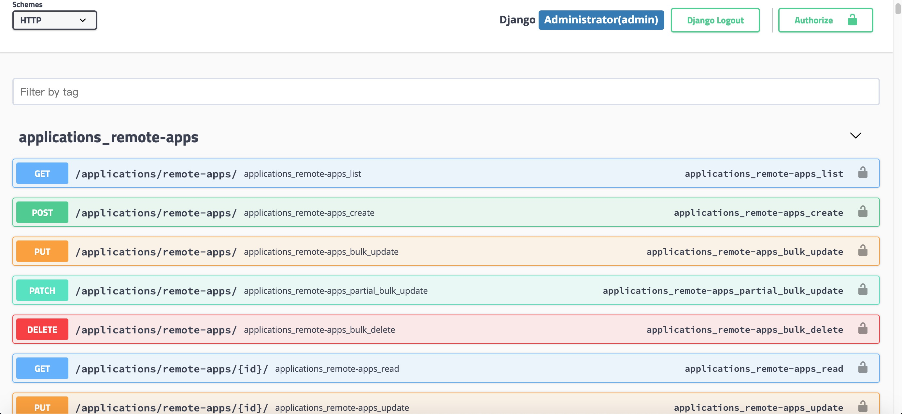

API文档¶
Api地址¶
- http://HOST:PORT/api/{VERSION}/{APP}/{RESOURCE}/
- http://HOST:PORT/api/{VERSION}/{APP}/{RESOURCE}/{RESOURCEID}/
Api列表¶
需要打开 debug 模式
vi jumpserver/config.yml
DEBUG: true

API认证¶
JumpServer Api 支持的认证有以下几种方式
Session 登录后可以直接使用session_id作为认证方式
Token 获取一次性Token，该Token有有效期, 过期作废
Private Token 永久Token
Access Key签名 对Http Header进行签名
Session
用户通过页面后登录，cookie中会存在 sessionid, 请求时同样把sessionid放到 cookie中
Token
使用账号密码调用 Api获取token，如果启用了MFA，则需要两步验证
curl -X POST http://localhost/api/v1/authentication/auth/ \
-H 'Content-Type: application/json' \
-d '{"username": "admin", "password": "admin"}'
import requests
import json
from pprint import
def get_token():
url = 'https://demo.jumpserver.org/api/v1/authentication/auth/'
query_args = {
"username": "admin",
"password": "admin"
}
response = requests.post(url, data=query_args)
return json.loads(response.text)['token']
def get_user_info():
url = 'https://demo.jumpserver.org/api/v1/users/users/'
token = get_token()
header_info = { "Authorization": 'Bearer ' + token }
response = requests.get(url, headers=header_info)
print(json.loads(response.text))
get_user_info()
Private Token
source /opt/py3/bin/activate
cd /opt/jumpserver/apps
python manage.py shell << EOF
from users.models import User
u = User.objects.get(username='admin')
u.create_private_token()
EOF
u.private_token
Access Key
Access key 签名机制是为了安全， IETF 发布的法案 详见此处 认证的原理是:
用户有一个 access key, key有ID(keyId)和密钥(keySecret), 这个key是预生成的，请求者和服务器都知晓
用户请求时 将请求的 地址、请求方法、时间等使用 密钥(某种对称算法)进行加密，作为签名 连同 keyId 一同放到 header 中发给服务器
Authorization: Signature keyId="Test",algorithm="rsa-sha256",
signature="jKyvPcxB4JbmYY4mByyBY7cZfNl4OW9HpFQlG7N4YcJPteKTu4MW
CLyk+gIr0wDgqtLWf9NLpMAMimdfsH7FSWGfbMFSrsVTHNTk0rK3usrfFnti1dx
sM4jl0kYJCKTGI/UWkqiaxwNiKqGcdlEDrTcUhhsFsOIo8VhddmZTZ8w="
服务器收到请求后，根据 keyId从数据库中取到keySecret, 解密签名，比对 签名内容和请求的字段是否一致，如果一致，认证成功，否则失败
python 使用 requests 请求示例
安装依赖
pip install requests drf-httpsig
python
import requests
from httpsig.requests_auth import HTTPSignatureAuth
KEY_ID = 'su-key'
SECRET = 'my secret string'
signature_headers = ['(request-target)', 'accept', 'date', 'host']
headers = {
'Accept': 'application/json',
'Date': "Mon, 17 Feb 2014 06:11:05 GMT"
}
auth = HTTPSignatureAuth(key_id=KEY_ID, secret=SECRET,
algorithm='hmac-sha256',
headers=signature_headers)
req = requests.get('http://localhost/api/v1/users/users/',
auth=auth, headers=headers)
print(req.content)